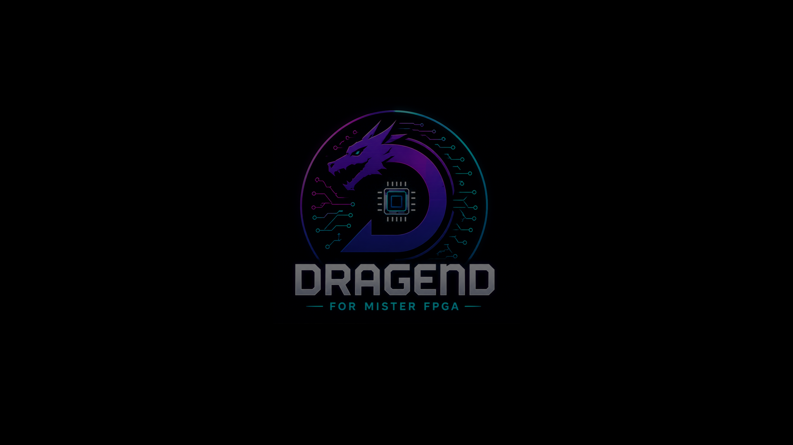
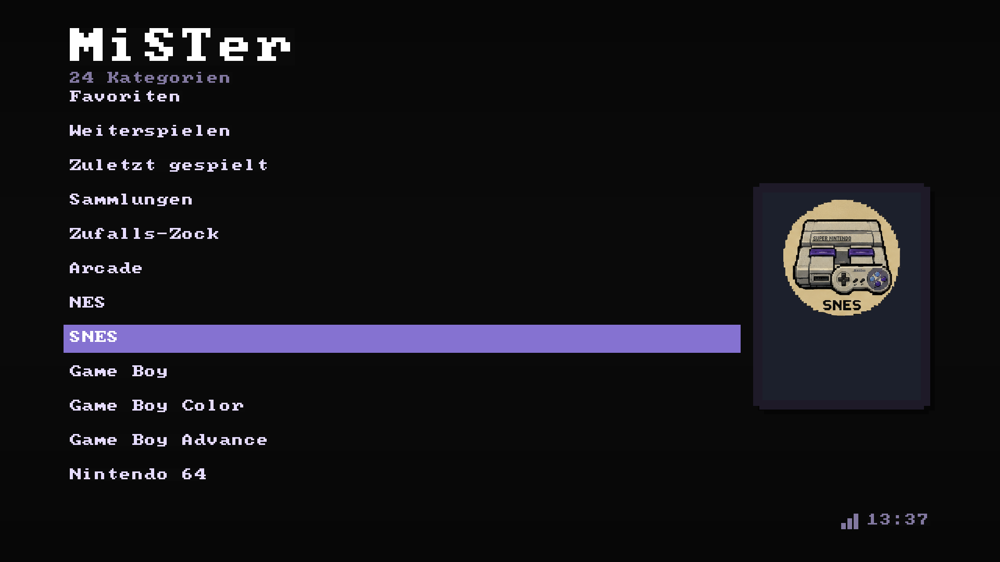

MiSTer Custom Frontend
Ein eigenes Menue fuer MiSTer FPGA – mit Erfolgen,
Statistiken und ein paar Geheimnissen zum Entdecken.
Statistiken und ein paar Geheimnissen zum Entdecken.
RA
RetroAchievements
★
Trophäenraum
▦
Sammlungen
?
Geheimnisse
SO SIEHT'S AUS
